Removal
WARNING:- Make sure jacks and safety stands are placed properly.
- Apply parking brake and block rear wheels so car will not roll off stands and fall on you while working under it.
CAUTION: Use fender covers to avoid damaging painted surfaces.
1. Disconnect the negative (-) cable from the battery, then the positive (+) cable.
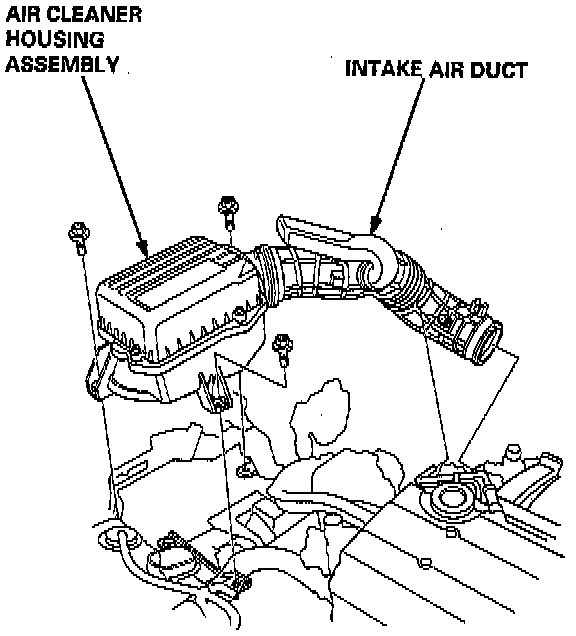
2. Remove the intake air duct and the air cleaner housing assembly.
3. Disconnect the back-up light switch connector and the transmission ground wire.
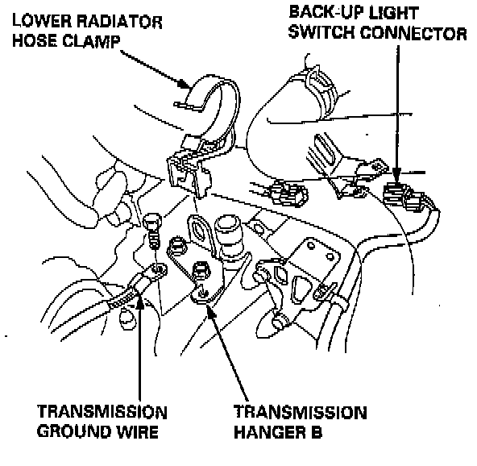
4. Remove the lower radiator hose clamp from the transmission hanger B.
5. Remove the wire harness clamps.
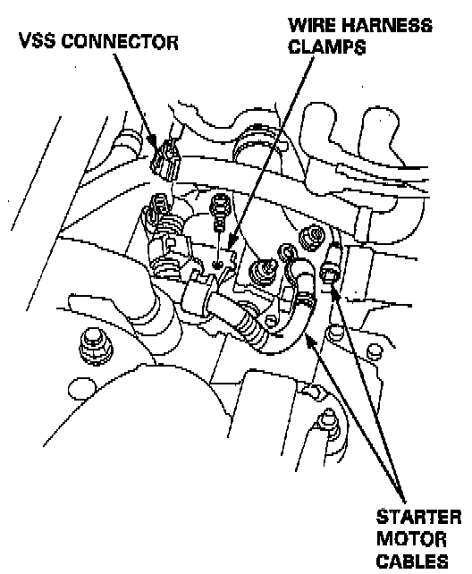
6. Disconnect the starter motor cables and the Vehicle Speed Sensor (VSS) connector.
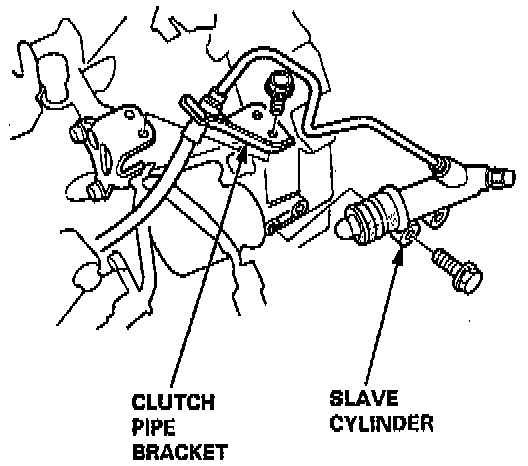
7. Remove the clutch pipe bracket and the slave cylinder.
NOTE: Do not operate the clutch pedal once the slave cylinder has been removed.
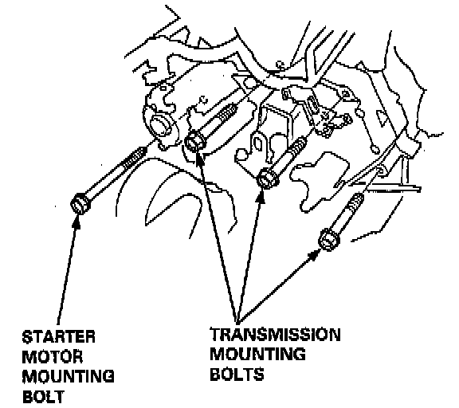
8. Remove the three upper transmission mounting bolts and the lower starter motor mounting bolt.
9. Drain the transmission oil, then reinstall the drain plug with a new washer.
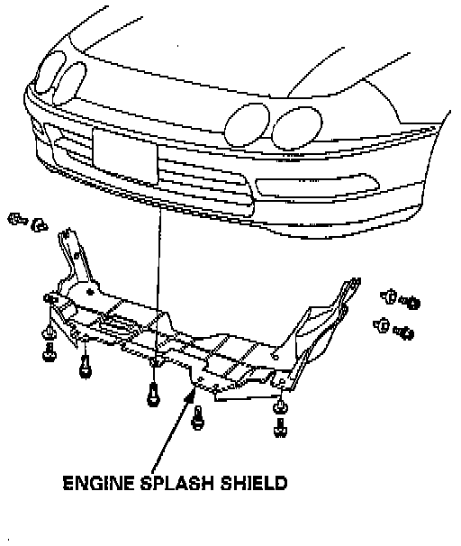
10. Remove the engine splash shield.
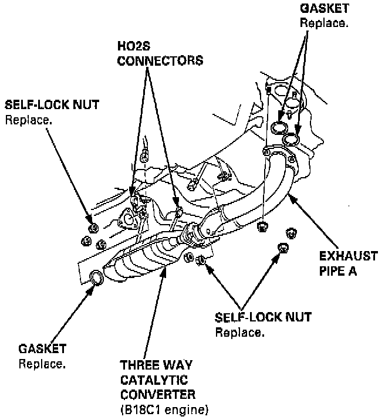
11. Disconnect the Heated Oxygen Sensor (H02S) connectors, then remove the exhaust pipe A.
12. Remove the cotter pins and loosen the castle nuts, then separate the ball joints from the lower arm.
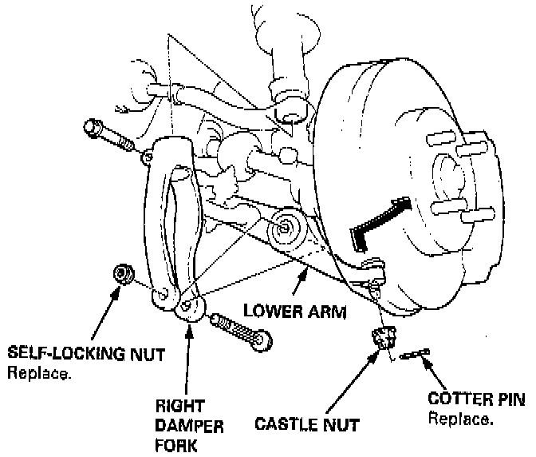
13. Remove the right damper fork.
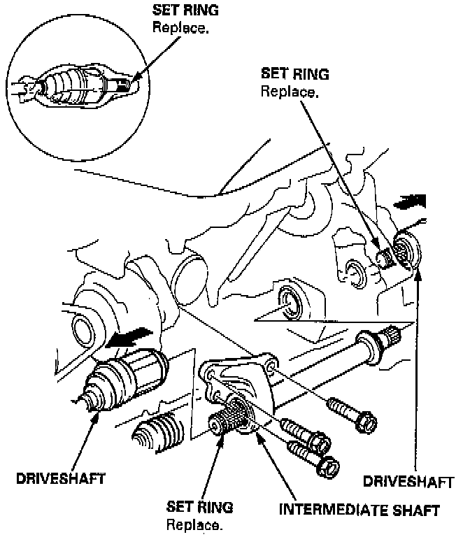
14. Remove the driveshafts and the intermediate shaft.
NOTE: Coat all precision finished surfaces with clean engine oil or grease. Tie plastic bags over the driveshaft ends.
15. Remove the bolt, then disconnect the extension rod.
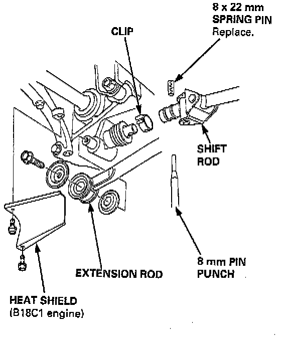
16. Remove the clip and the spring pin, then disconnect the shift rod.
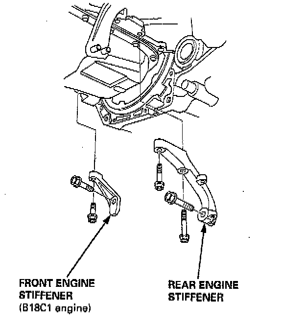
17. Remove the rear engine stiffeners.
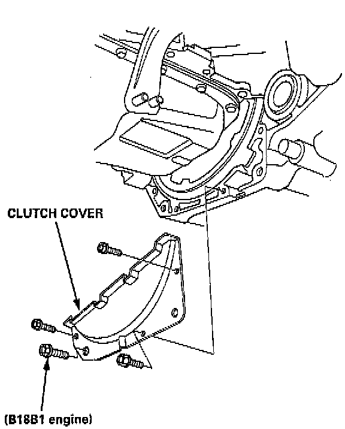
18. Remove the clutch cover.
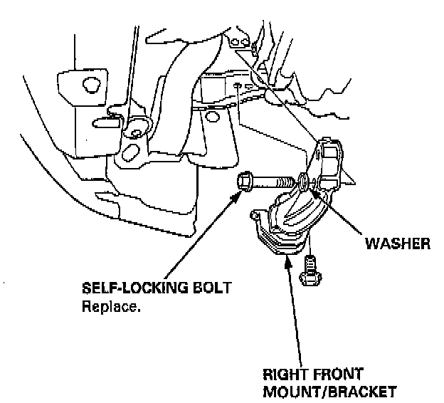
19. Remove the right front mount/bracket.
20. Place a transmission jack under the transmission and a jack stand under the engine.
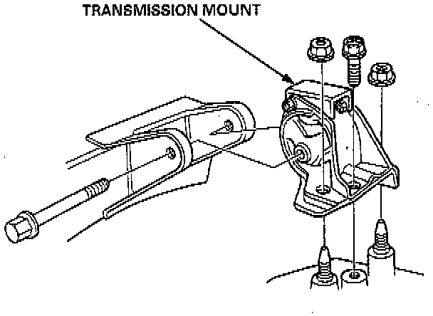
21. Remove the transmission mount.
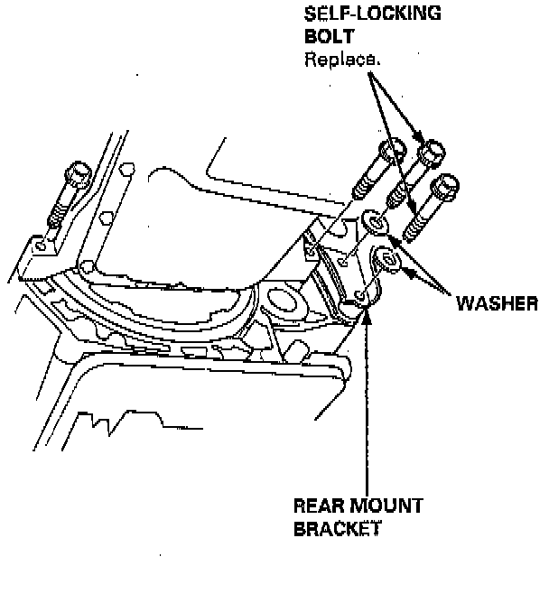
22. Remove the rear mount bracket bolts and the transmission mounting bolts.
23. Pull the transmission away from the engine until it clears the mainshaft, then lower it on the transmission jack.